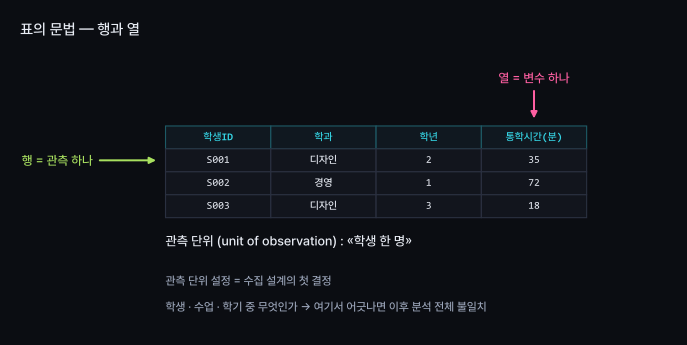
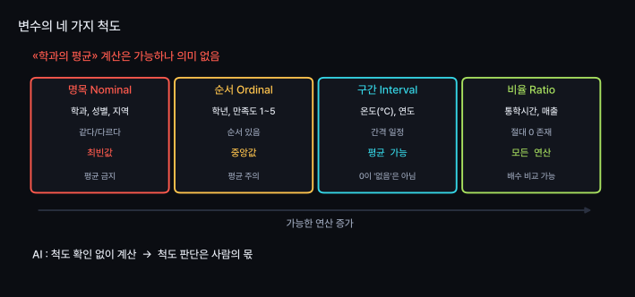
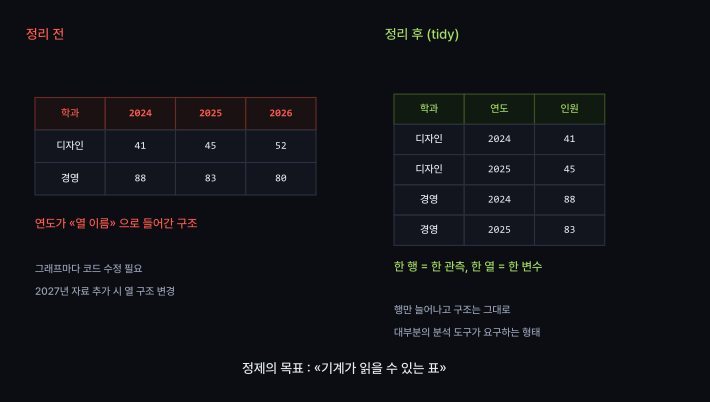
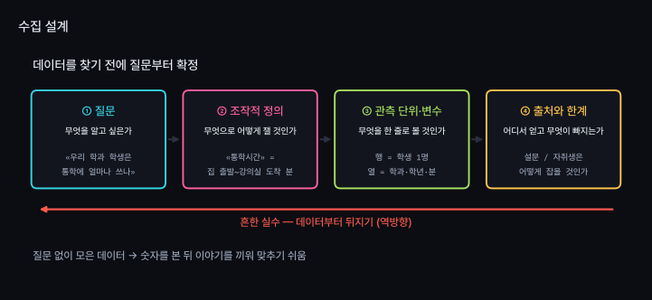
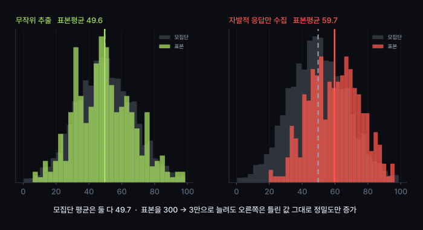
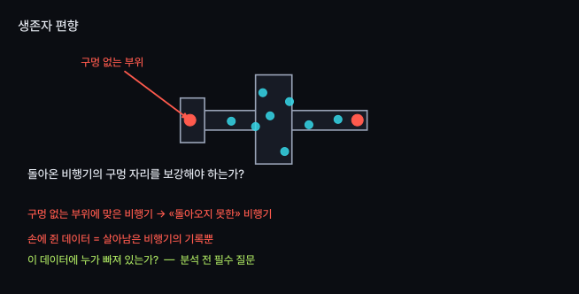

정형·비정형 데이터, 설문·공공데이터·웹 수집
표의 문법 이해 · 행의 단위 결정 = 모든 분석의 출발점
데이터 탐색 전 질문 고정 · 순서가 바뀌면 분석 대신 끼워 맞춘 해석
가진 데이터보다 빠진 데이터에 담긴 정보가 더 많음
측정되지 않은 대상 = 분석에서 존재하지 않는 대상
행과 열이 정해진 표
엑셀, CSV, 데이터베이스
바로 계산 가능
구조는 있으나 표 형태는 아님
JSON, XML, 로그 파일
표로 펼친 뒤 계산 가능
텍스트, 이미지, 음성, 영상
리뷰 글, 사진, 통화 녹음
숫자로 변환 후 계산 가능
세상 데이터의 대부분은 비정형 · 이 수업의 분석 기법은 거의 정형 전제
→ "표로 만드는 일" 자체가 분석의 절반



좋은 질문 → 좋은 데이터 → 좋은 분석

"통학시간이 길다" 는 분석 불가 → 측정 방법 결정이 먼저
| 말 | 조작적 정의 (예시) | 이 정의가 빠뜨리는 것 |
|---|---|---|
| 통학시간 | 집 문을 나서서 강의실 도착까지의 분 | 환승 대기, 도보 구간 |
| 인기 있는 강의 | 수강신청 마감까지 걸린 초 | 재수강, 필수과목 여부 |
| 위험한 교차로 | 연간 인명사고 건수 | 많은 통행량의 영향 가능성 |
완벽한 정의는 없음
핵심 : 정의를 먼저 기록 · 빠지는 부분을 인지
원하는 변수를 정확히 설계 가능
질문 설계에 따라 답 변화 — 유도질문, 척도 설계가 결과 좌우
data.go.kr · KOSIS
큰 규모, 높은 신뢰도
내 질문에 딱 맞는 데이터는 드묾
없는 데이터를 직접 생성 가능
이용약관·저작권·개인정보
기술보다 판단이 우선
이번 학기 실습 데이터 : 공공데이터
이유 : 실제로 지저분함 · 실제로 활용됨 · 임의로 만들 수 없는 데이터


이 데이터에서 빠진 사람은 누구인가?
아주 좋았거나 아주 나빴던 사람만 작성
→ 보통이었던 사람 전체 누락
중도 포기 학생은 응답 없음
→ 가장 불만족한 집단 누락
표본 크기를 늘려도 해결 불가 → 틀린 결과가 더 정밀해질 뿐
코드 작성은 AI · 요구 사항 결정과 오류 판별은 학생
알고 싶은 것을 한 문장으로 기록
AI에게 정확한 용어로 요구
결과의 사실 여부를 원본으로 재확인
프로그래밍 지식 불필요
필요한 역량 : 이상한 결과를 알아보는 능력 — 이 수업의 목표
[목표]
내려받은 CSV 파일의 구조를 파악한다.
[제약]
- 파일을 임의로 수정하지 말 것
- 결측치를 채우거나 행을 지우지 말 것 (이번 주는 «보기»만)
[검증 조건]
- 출력된 행 수가 원본 파일의 줄 수와 일치할 것
- 각 열의 자료형과 결측 개수를 표로 보여줄 것
[비목표]
- 그래프, 통계 분석은 하지 말 것
[제약]에 "하지 말 것"을 적는 이유 : 요청하지 않아도
AI가 임의로 정제하는 경향
→ 다음 주 주제
| # | 실습 | 확인할 개념 |
|---|---|---|
| 1 | 관심 주제 선정 · 질문 한 문장과 조작적 정의 작성 | 수집 설계 |
| 2 | AI에게 관련 공공데이터 질문 · 링크를 하나씩 직접 열어 실제 존재 여부 확인 | AI 함정 #1 |
| 3 | data.go.kr 에서 실제 CSV 내려받기 | 실물 확보 |
| 4 | 위 명세로 AI에게 구조만 파악 요청 — 행 수, 열 이름, 자료형, 결측 개수 | 표의 문법 |
| 5 | 해당 데이터로 내 질문에 답할 수 있는지 판단 · 불가능하면 부족한 부분 기록 | 설계 검증 |
5번의 결론이 "답할 수 없음" 이어도 무방 · 이 사실을 지금 파악하는 것이 실습의 목적
| 개념 | 핵심 |
|---|---|
| 정형·비정형 | 세상은 비정형, 분석은 정형 요구 → 표로 만드는 작업이 절반 |
| 관측 단위 | 한 행의 단위 결정이 첫 단계 · 여기서 틀리면 전체 오류 |
| 척도 | «학과의 평균» 계산은 가능하나 의미 없음 · 판단은 사람의 몫 |
| tidy | 한 행 = 한 관측, 한 열 = 한 변수 |
| 수집 설계 | 질문 → 조작적 정의 → 변수 → 출처 · 역순이면 끼워 맞춘 해석 |
| 편향 | 이 데이터에서 빠진 사람은 누구인가 · 표본 확대로 해결 불가 |
| AI 함정 #1 | 존재하지 않는 데이터셋을 그럴듯하게 생성 → 직접 열어 확인 필수 |
오늘 내려받은 파일 열어보기
빈칸, 중복, 깨진 글자, "미상" — 처리 방식에 따라
결론이 달라지는 사례